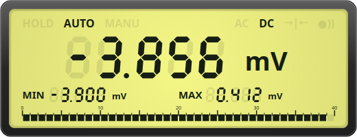
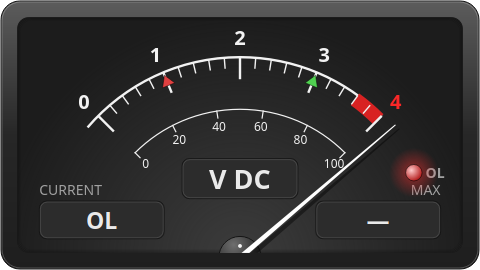
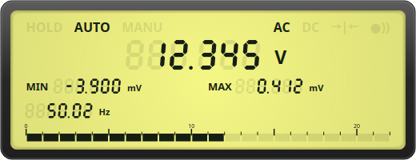

QtDMM reads digital multimeters over serial, USB‑HID and network cables, shows the reading on an analog needle instrument and an LCD panel, and records it over hours or days with a built‑in transient recorder.
Works with Uni‑T, Voltcraft, Metex, Mastech, PeakTech and many more — including meters whose vendor software stopped working years ago.


Made for hobbyists, repair shops and labs who want to see and log what their meter measures — without proprietary software. The full handbook is built in (F1) and online.
Studio VU‑meter style dial with needle ballistics, red overrange zone and OL lamp. Auto‑ranging scale, dark or ivory face.

Seven‑segment digits, bargraph, min/max, mode annunciators — scales with the window and docks anywhere.

Start manually, at a scheduled time or when a threshold is crossed. Zoom, pan, cursor read‑out, integration curve, print and CSV export.

RS‑232 and USB‑serial, USB‑HID cables (Uni‑Trend UT‑D04/D09, Brymen BU‑86X), RFC2217 remote serial over the network, or sigrok‑cli as a backend.
One QtDMM per meter, all recording in sync — and a third instance that calculates from them: P = U·I, a voltage drop, a probe factor. Any formula, shown and recorded like a measured value.
A built‑in value source — constant, sine, square, noise, discharge curve or any formula. For testing without hardware, or as the stand‑in for a meter you don't have: a fixed supply voltage times a real current gives power.
Every model is selected from a vendor/model list that fills in the serial settings for you. Unknown meters that speak a known protocol work with manual settings.
Windows installer and portable ZIP, source for Linux, macOS and FreeBSD. Free software under the GNU GPL v3 — no registration, no telemetry.